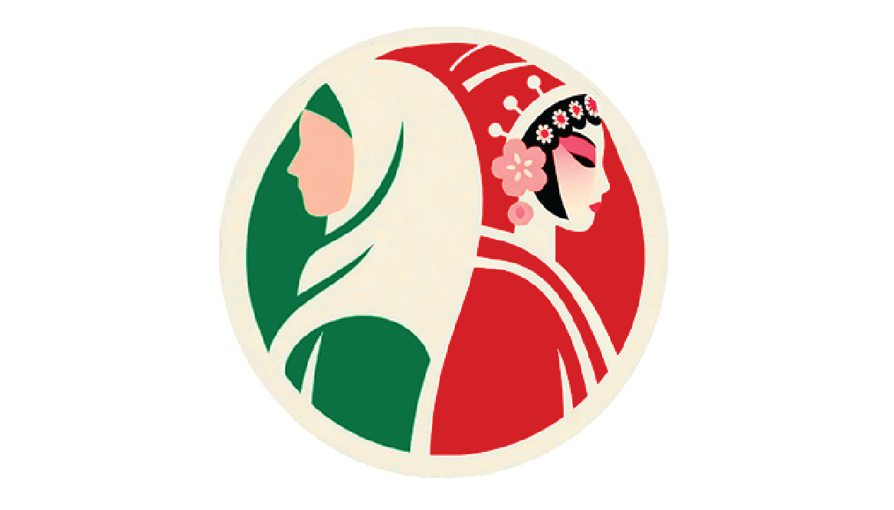
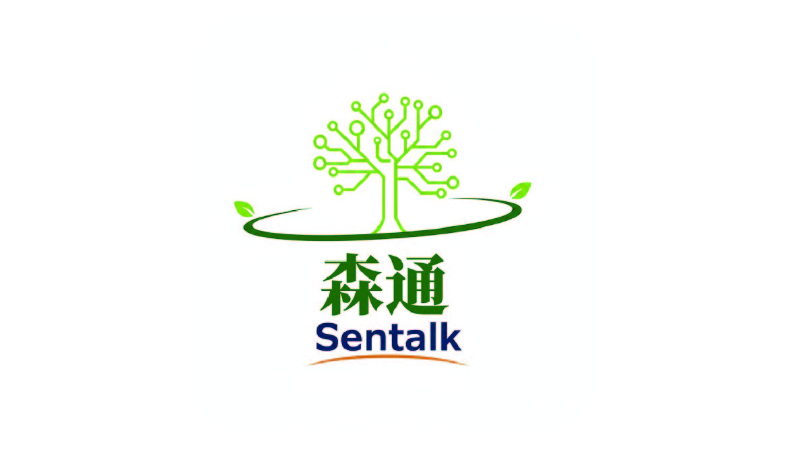
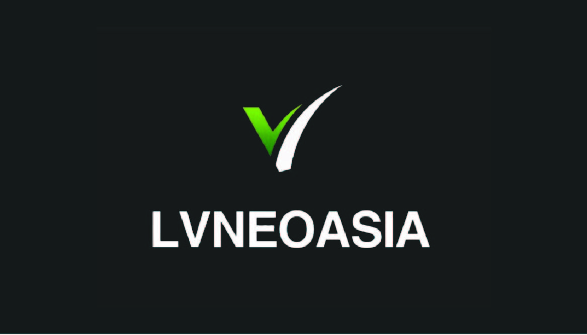
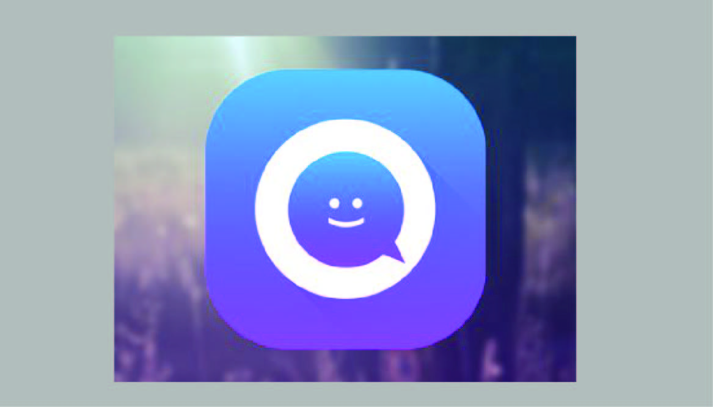
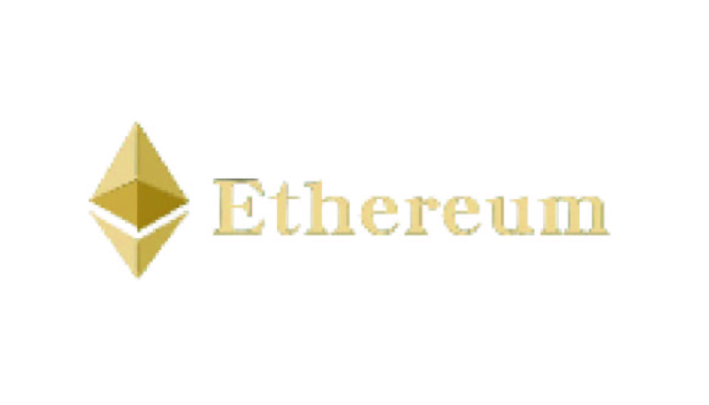
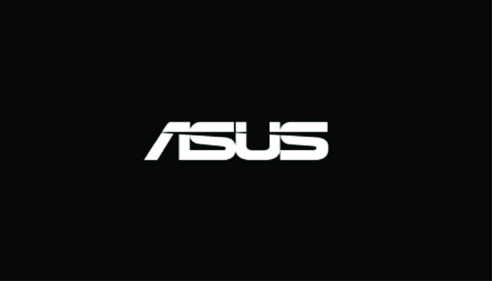

Tian Fang Yu Ye - App Design
Complete visual evolution from V1 to V3 showcasing design iterations.





Focusing on real-time monitoring and portfolio management for digital assets.

Creative visual expression based on ASUS brand identity, focusing on typography.